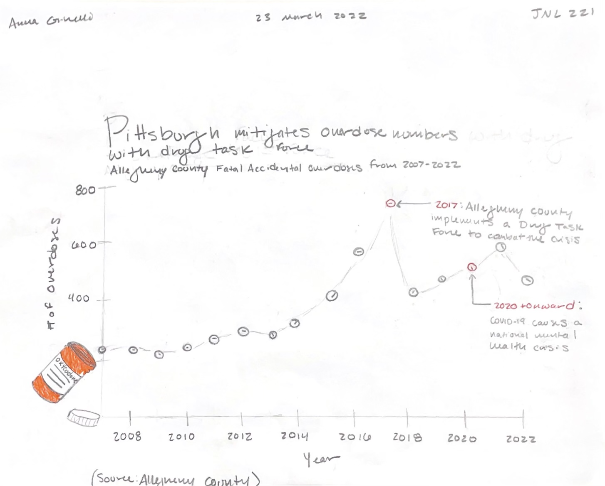

Analysis on data collected by Allegheny County from 2007-2023
The first choice I made was to use a column chart to demonstrate the data. I put the bars in ascending order. I added a line for the average death rate to contextualize the data and I made it red to make it more eye catching. If I were to change anything, I would maybe change the colors of the columns to something else that is a deeper color, as it is a serious topic.
I decided to make a line graph with data points representing the amount of accidental fatal overdoses in Allegheny county in each of the respective years. I chose to do a oxycodone bottle that was spilled out with the pills being the plots on the graph. The one thing I would change is maybe write in black pen instead of pencil to make it a little more readable.
